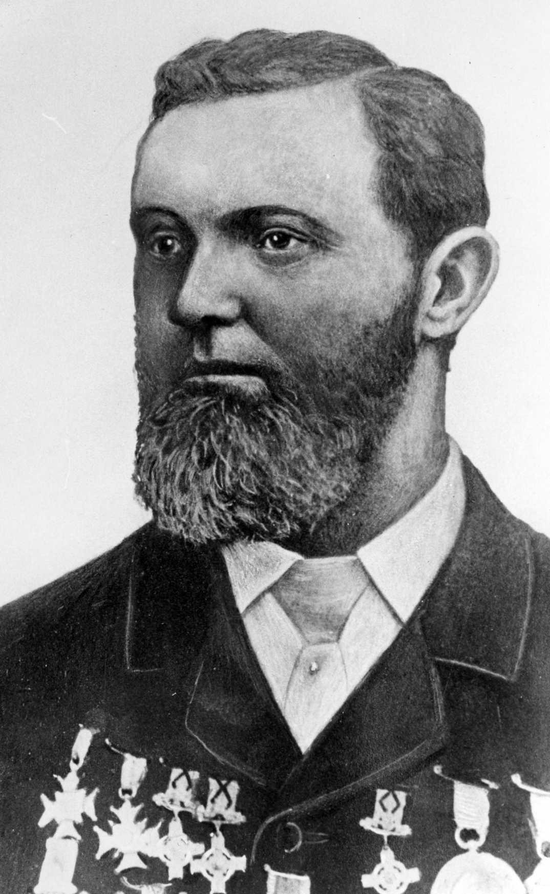

Name
Role
County

The GAA is celebrated as one of the great amateur sporting associations in the world, it is part of the Irish consciousness and plays an influential role in Irish society that extends far beyond the basic aim of promoting Gaelic games.
It was founded on November 1st 1884 at a meeting in Hayes' Hotel (pictured), Thurles, Co. Tipperary, by a group of spirited Irishmen(listed below) who had the foresight to realise the importance of establishing a national organisation to make athletics more accessible to the masses and to revive and nurture traditional, indigenous sports and pastimes.
Name |
Role |
County | |
|---|---|---|---|
| Maurice Davin | President | Tipperary |  |
| Michael Cusack | Secretary | Clare | |
| John McKay | Secretary | Cork | |
| John Wise-Power | Secretary | Kildare | |
| Joseph K. Bracken | Member | Tipperary | |
| P. J. Ryan | Member | Tipperary | |
| Thomas St George McCarthy | Member | Tipperary |
At that time, it was largely only the gentry and aristocracy who were allowed to participate in athletics. Until then all that was Irish was being steadily eroded by emigration, intense poverty and outside influences. Within six months of that famous first meeting, GAA clubs began to spring up all over Ireland and people began to play the games of Hurling and Gaelic Football and take part in Athletic events with pride. The Association today promotes Gaelic games such as
The organisation is based around the traditional parish and county structures of Ireland. As a community-based organisation, it is often stated that it is difficult to determine where the community ends and the GAA club starts, as the two are so often intertwined. The GAA has over 2,200 clubs in all 32 counties of Ireland.
Every summer the inter-county All-Ireland Championships in hurling, football and camogie capture the attention of the Irish public. Regional towns heave with the arrival of large numbers of supporters and all the colour, noise and excitement that they bring - culminating with the showcase All-Ireland finals in Croke Park during September. The GAA continues to develop abroad, led by the Irish Diaspora. The Irish who emigrated brought their national games with them with both regional and club units now well established in the United States, Australia, Britain, mainland Europe, Canada, Asia and many other parts of the world. 400 clubs promote the activities of the GAA around the world.